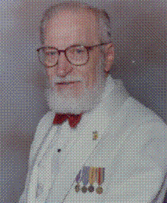

Throughout our invasion of Saipan, we invariably halted our advance before darkness and as soon as squad leader, Sgt. Dave Utley, assigned where our fire team were to hole up for the night our number one priority was to evaluate the real estate we controlled and improve our fire zone to make it defendable My fire group consisted mainly myself, as BAR and temporary group leader, Robert Higley, my Ass’t BAR and Ray Parnitzke, Rifleman. Fire lanes were cleared ahead and holes were dug to lower our silhouette and to make our stay as comfortable as possible. On the day I’m about to describe, we were directed to hold up along the southern edge of a sugar cane field, near its western boundary. To our rear were trees and brush we had advanced through without encountering any enemy. A dirt road bordered the cane field and our line of defense was the south edge of the dirt road.
As was our practice, we hacked down any cane field with our machetes that limited our field of vision to create a fire lane, anywhere from 20 feet to 50 feet in depth. The cane stalks were laid in the furrows. This was to prevent the silent approach by enemy troops to our position through the cane field. If anyone were to attempt to walk or crawl between the rows of cane, they could not do so silently because the cane stocks were brittle especially if the outer leaves had been burned off and which was often the case. While I have no knowledge of processing sugar cane it was my understanding that the heart of the cane stalks are not damaged from burning the outer leaves before harvesting and many of the fields had been burned which simplified the harvesting.
While we were hacking down cane and before all was dark, a 37 MM gun was brought into our position and assigned the space adjacent to my foxhole on my right. When we were satisfied the enemy had no place to hid behind or approach without making a noise we commenced to dig in and the 37 crew did likewise, not only to protect the gun crew but also the 37 MM gun itself, to lower its profile to enable it to fire at just above the ground level.
Four or five foxholes to my left was the SW corner of the cane field and the dirt road bent a ninety degree turn to the north following along the west side of the cane field. A bazooka team was positioned and dug in at that corner to cover the road should the enemy use the road to mount a tank led attack down this road.
As holes were completed, gear was stowed, smoking lamp was out and the troops settled in along side their weapons. Gradually talking between foxholes ended and one man in each hole took the first watch for the evening. No star shells illuminated the night sky and the sounds of crickets, frogs and other varmints seemed to become louder with the darkness settled in. Now our hearing and visual senses adjust to became attuned to the darkness and the sounds of the night.
For a considerable time all was well. There had been one or more changes of the watch without any unusual happening. Then finally there was a change in the sounds as though one or more human voices could be heard. They were talking quietly among themselves as they came closer gradually becoming louder as they neared. A conversation could be distinguished but words were not distinguishable and our senses told us these humans were steadily getting nearer. The sound of their voices appeared to be coming toward us along the dirt road. It was obvious, whoever was coming, they were not aware we were near and they made no effort to lower their voices. I nudged my foxhole mate but found that had not been necessary, Higley was awake. My cheek was pressed against the stock of my BAR and my eyes were straining for the sight of anything moving but nothing could be seen. The voices were very near and seemed to be at the turn in the road. Then loudly the Marine in the nearest foxhole on the South side of the corner challenged the intruders, “Halt ! Who goes there?” The talking ceased and simultaneously something was thrown toward the Marine who had called out and two bodies bolted down the road as fast as they could run. A tremendous explosion erupted along our line of foxholes at or near the corner. Then two figures came into my view and my BAR spoke with one or two fast bursts. Almost at the same instant that I opened up with the BAR the 37 MM erupted. Both figures that had come into my view lunged forward and fell hard on the ground on the far edge of the road opposite my foxhole. Anticipating there may be more to come, my eyes strained into the darkness. There was great commotion and shouting off to my left and calling for Corpsman. Master Gunnery Sgt Farrell could be heard to shout “Stay put!” The darkness had been shattered then quiet returned. The downed bodies out on the edge of the road were watched. No movement could be seen. Then finally one faintly called out “Mercy Maleen!” Again Farrell commanded, “Stay put!” Three or four times during the following hour the call “Mercy Maleen!” was heard.
At the first lighting of the predawn sky, Farrell once again ordered to stay put as he walked through our line of foxholes out to the bodies now quiet for a long time. He checked the bodies and announced they were both dead and stated one was an enlisted man the other an officer, apparently a doctor. Farrell relieved the officer of his saber and returned to the area he came from.
The scene of the explosion was ghastly. One Marine had rolled out of the hole in time but his foxhole buddy was blown out and pieces of his body and uniform hung from the branches in the trees behind our row of foxholes. I have attempted to learn who it was that died that night but so far his identity has not been revealed.
In response to my inquiry, David Utley, my squad leader, sent the following note to me. “Hi Orvel! Those were some memories. So you are writing another one of your memories which I recall that happened very near the foxhole that I was in and parts of flesh dropped into my foxhole. I can recall very vividly; as to the date, I can’t remember either. Dave”
Rowland was wounded 17 June and was out of the company for a few days, returning on 23 June. He did not have any memory of this night. It might have occurred while his wounds were being attended. Forrest Southwick was wounded on 25th. Hopefully he can shed some light on this, if it happened before he was wounded.
Webmaster Note: Following is the text from an email received from Orvel which sheds further light on this incident
Forrest called this morning in response to the story referenced above. We talked for over 1/2 hour. Forrest clearly recalled the incidence. He stated, "In the morning, I saw the body lying behind the foxhole. The entire midsection of the body was gone. It was a member of C Company and I think it was Daniel Pedroza, a very nice Hispanic member of Dave Utley's squad, 1st squad, 1st platoon." I told him it was not Dan, who had been my foxhole partner and a casualty on 17 June. Forrest was wounded on 25 June. Between those dates, five Charlie company Marines were KIA, all on 19 June. They were, Rex Bridges, Henry Smagon, Claude Stafford, Vincent Clark and Lupe Gallegos. Only Lupe Gallegos could have resembled Dan. While I am not sure it was him, in my estimation it was. None of the others could have been mistaken for Dan. Darkness Shattered is the last of my in-depth stories. I am working on incidents that will be grouped under "Snapshots" because that is about all I can recall of each. And I'd like to add an addendum to my description of 17 June. There is no hurry about adding them to the website. I'll forward them when they're ready. Have a great get together in San Antonio. Semper Fi Orv
Written by
Orvel Johnson. Page maintained by Rowland Lewis
Last Modified
12/19/2002